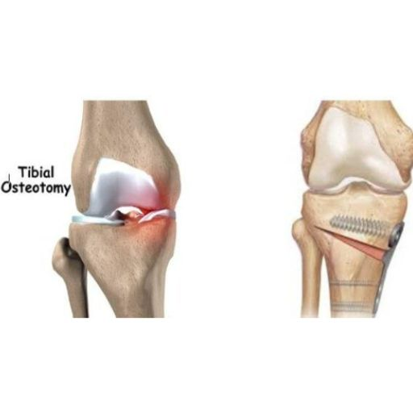

Home
Home
Knee Osteotomy
A Joint-Preserving Solution for Pain Relief and Mobility Restoration
Knee osteotomy is an advanced surgical procedure designed to realign the leg, redistribute joint pressure, and relieve pain caused by osteoarthritis. Unlike a total knee replacement, this technique preserves the patient’s natural joint, extending its lifespan and offering an effective solution for those who wish to maintain an active lifestyle.

Who Is a Candidate for Knee Osteotomy?
This procedure is particularly beneficial for: ✔️ Active individuals and younger patients who are not ideal candidates for a total knee replacement. ✔️ Patients with unicompartmental osteoarthritis, where cartilage damage is limited to one part of the knee (most commonly the medial compartment). ✔️ People with leg alignment deformities, such as genu varum (bowlegs) or genu valgum (knock-knees), which cause uneven joint wear and pain. If you meet these criteria, knee osteotomy may help delay the need for a knee replacement, reduce pain, and restore mobility.
What Does a Knee Osteotomy Involve?
Depending on the patient's leg alignment and the degree of osteoarthritis, there are two primary types of osteotomy: 🔹 High Tibial Osteotomy (HTO): Performed on the upper tibia, this is the most common procedure for correcting genu varum (bowlegs). 🔹 Distal Femoral Osteotomy: Conducted on the lower femur, primarily for patients with genu valgum (knock-knees).
Step-by-Step Surgical Technique
Knee osteotomy is a highly precise procedure planned using advanced software to calculate the exact correction needed. 1️⃣ Anesthesia and Preparation The patient receives general or regional anesthesia to ensure a pain-free experience. 2️⃣ Incision and Bone Access A 10 cm incision is made over the knee to expose the tibia or femur. 3️⃣ Bone Cutting Using specialized surgical guides and precision tools, a controlled cut is made in the bone. Depending on the correction required, the surgeon may either remove a wedge of bone (closing-wedge osteotomy) or create a space and fill it with bone graft (opening-wedge osteotomy). 4️⃣ Fixation with Plates and Screws Once the optimal alignment is achieved, the correction is stabilized using biocompatible plates and screws. 5️⃣ Wound Closure The incision is sutured, and a protective bandage is applied.
Benefits of Knee Osteotomy
✔️ Preserves the natural joint and delays the need for a knee replacement. ✔️ Significantly reduces pain and enhances quality of life. ✔️ Allows continued participation in physical activities and sports. ✔️ Corrects leg alignment, preventing accelerated joint wear.
Recovery and Rehabilitation
Recovery varies from patient to patient, but in general: 🔹 First Few Weeks: Patients use crutches to avoid weight-bearing on the operated leg. 🔹 1-2 Months: Physical therapy begins to restore mobility and strengthen muscles. 🔹 3-6 Months: Most patients resume daily activities and low-impact sports. 🔹 12 Months: Full recovery with the possibility of returning to more demanding sports.
What Are the Risks of Knee Osteotomy?
As with any surgery, knee osteotomy carries some risks, although complications are rare when performed by an experienced surgeon. Potential risks include: ⚠️ Infection at the surgical site. ⚠️ Delayed or non-union, where the bone does not heal properly. ⚠️ Nerve or blood vessel injury. ⚠️ Deep vein thrombosis (DVT), leading to blood clots. ⚠️ Fracture at the correction site, particularly in opening-wedge osteotomies. Choosing a skilled surgeon and following a structured rehabilitation program significantly reduces these risks.
Why Choose Me?
When it comes to knee osteotomy, precision and expertise are everything. Choosing the right surgeon is critical to ensuring the best possible outcome. Here’s why you should entrust your knee health to me: 🏆 Extensive Experience – As a board-certified orthopedic surgeon with international training, I specialize in knee osteotomy techniques, combining the latest research with hands-on expertise. 🔬 Advanced Surgical Techniques – I utilize cutting-edge preoperative planning software, ensuring your osteotomy correction is perfectly calculated for optimal biomechanics and long-term success. 💬 Personalized Approach – Every knee is unique, and so is every patient. I tailor each surgical plan based on your specific anatomy, lifestyle, and activity goals to help you get back to doing what you love. 🤝 Multidisciplinary Care – My approach doesn’t end in the operating room. I work closely with expert physiotherapists and rehabilitation specialists to guide you through recovery, ensuring the best long-term results. 📍 Trusted by International Patients – My practice attracts patients from around the world, offering world-class orthopedic care with a focus on excellence and patient satisfaction.
Is Knee Osteotomy Right for You?
If you suffer from localized knee osteoarthritis or have a leg alignment deformity, knee osteotomy could be an excellent alternative for pain relief and mobility restoration—without resorting to joint replacement. Each patient is unique, so a comprehensive evaluation, including imaging studies and biomechanical analysis, is essential to determine if this procedure is right for you. 📩 Book a consultation today and take the first step toward pain-free movement!